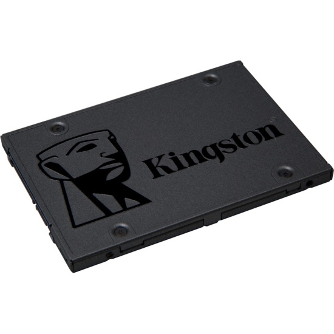

Жесткий диск(HDD)
Что такое жесткий диск?
Жесткий диск (винт, винчестер, накопитель на жестких магнитных дисках, НЖМД, HDD, HMDD) – запоминающее устройство произвольного доступа, основанное на принципе магнитной записи.
Используются в подавляющем большинстве компьютеров, а также как отдельно подключаемые устройства для хранения резервных копий данных, в качестве файлового хранилища и т.п.
Чуть-чуть разберемся. Мне нравится термин “накопитель на жестких магнитных дисках“. Эти пять слов передают всю суть. HDD – устройство, предназначение которого длительное время хранить записанные на него данные. Основой HDD являются жесткие (алюминиевые) диски со специальным покрытием, на которое при помощи специальных головок записывается информация.
Также обратим внимание на фразу: “произвольного доступа” что, грубо говоря, означает, что мы (компьютер) можем в любое время считать информацию с любого участка ЖД.
Важным является тот факт, что память HDD не энергозависима, то есть не важно подключено питание или нет, записанная на устройство информация никуда не исчезнет. Это важное отличие постоянной памяти компьютера, от временной (ОЗУ).
Взглянув на жесткий диск компьютера в жизни, вы не увидите ни дисков, ни головок, так как все это скрыто в герметичном корпусе (гермозона). Внешне винчестер выглядит так:
Чуть-чуть разберемся. Мне нравится термин “накопитель на жестких магнитных дисках“. Эти пять слов передают всю суть. HDD – устройство, предназначение которого длительное время хранить записанные на него данные. Основой HDD являются жесткие (алюминиевые) диски со специальным покрытием, на которое при помощи специальных головок записывается информация.
Также обратим внимание на фразу: “произвольного доступа” что, грубо говоря, означает, что мы (компьютер) можем в любое время считать информацию с любого участка ЖД.
Важным является тот факт, что память HDD не энергозависима, то есть не важно подключено питание или нет, записанная на устройство информация никуда не исчезнет. Это важное отличие постоянной памяти компьютера, от временной (ОЗУ).
Взглянув на жесткий диск компьютера в жизни, вы не увидите ни дисков, ни головок, так как все это скрыто в герметичном корпусе (гермозона). Внешне винчестер выглядит так:
Для чего компьютеру нужен жесткий диск
Рассмотрим что такое HDD в компьютере, то есть какую роль он играет в ПК. Понятно, что он хранит данные но, как и какие. Здесь выделим такие функции НЖМД:
Хранение ОС, пользовательского ПО и их настроек
Хранение файлов пользователя: музыка, видео, изображения, документы и т.д
Использование части объема жесткого диска, для хранения данных не помещающихся в ОЗУ (файл подкачки) или хранение содержимого оперативной памяти во время использования режима сна
Как видим, жесткий диск компьютера не просто свалка из фотографий, музыки и видео. На нем хранится вся операционная система, и помимо этого ЖД помогает справляться с загруженностью ОЗУ, беря на себя часть ее функций.
Из чего состоит жесткий диск
Мы частично упоминали о составных жесткого диска, сейчас разберемся с этим детальнее. Итак, основные составляющие HDD:
Корпус – защищает механизмы жесткого диска от пыли и влаги. Как правило, является герметичным, дабы внутрь та самая влага и пыль не попадали
Диски (блины) – пластины из определенного сплава металлов, с нанесенным с обеих сторон покрытием, на которое и записываются данные. Количество пластин может быть разным – от одной (в бюджетных вариантах), до нескольких
Двигатель – на шпинделе которого закреплены блины
Блок головок – конструкция из соединенных между собой рычагов (коромысел), и головок. Часть ЖД, которая считывает и записывает на него информацию. Для одного блина используется пара головок, поскольку и верхняя, и нижняя часть у него рабочая
Устройство позиционирования (актуатор) – механизм приводящий в действие блок головок. Состоит из пары постоянных неодимовых магнитов и катушки, находящейся на конце блока головок
Контроллер – электронная микросхема управляющая работой HDD
Парковочная зона – место внутри винчестера рядом с дисками либо на их внутренней части, куда опускаются (паркуются) головки во время простоя, чтобы не повредить рабочую поверхность блинов
Как работает жесткий диск
После того, как на HDD подается питание двигатель, на шпинделе которого закреплены блины, начинает раскручиваться. Набрав скорость, при которой у поверхности дисков образовывается постоянный поток воздуха, начинают двигаться головки.
Данная последовательность (сначала раскручиваться диски, а затем начинают работать головки) необходима для того, чтобы за счет образовавшегося потока воздуха, головки парили над пластинами. Да, они никогда не касаются поверхности дисков, иначе последние были бы моментально повреждены. Тем не менее, расстояние от поверхности магнитных пластин до головок настолько маленькое (~10 нм), что вы не увидите его невооруженным глазом.
После запуска, в первую очередь происходит считывание служебной информации о состоянии жесткого диска и других необходимых сведениях о нем, находящихся на так называемой нулевой дорожке. Только затем начинается работа с данными.
Информация на жестком диске компьютера записывается на дорожки которые, в свою очередь, разбиты на сектора (такая себе разрезанная на кусочки пицца). Для записи файлов несколько секторов объединяют в кластер, он и является наименьшим местом, куда может быть записан файл.
Кроме такого “горизонтального” разбиения диска, есть еще условное “вертикальное”. Поскольку все головки объединены, они всегда позиционируются над одной и той же по номеру дорожкой, каждая над своим диском. Таким образом, во время работы HDD головки как бы рисуют цилиндр:
Данная последовательность (сначала раскручиваться диски, а затем начинают работать головки) необходима для того, чтобы за счет образовавшегося потока воздуха, головки парили над пластинами. Да, они никогда не касаются поверхности дисков, иначе последние были бы моментально повреждены. Тем не менее, расстояние от поверхности магнитных пластин до головок настолько маленькое (~10 нм), что вы не увидите его невооруженным глазом.
После запуска, в первую очередь происходит считывание служебной информации о состоянии жесткого диска и других необходимых сведениях о нем, находящихся на так называемой нулевой дорожке. Только затем начинается работа с данными.
Информация на жестком диске компьютера записывается на дорожки которые, в свою очередь, разбиты на сектора (такая себе разрезанная на кусочки пицца). Для записи файлов несколько секторов объединяют в кластер, он и является наименьшим местом, куда может быть записан файл.
Кроме такого “горизонтального” разбиения диска, есть еще условное “вертикальное”. Поскольку все головки объединены, они всегда позиционируются над одной и той же по номеру дорожкой, каждая над своим диском. Таким образом, во время работы HDD головки как бы рисуют цилиндр:

Пока HDD работает, по сути он выполняет две команды: чтение и запись. Когда необходимо выполнить команду записи, происходит вычисление области на диске куда она будет производится, затем позиционируются головки и, собственно, выполняется команда.
Затем результат проверяется. Кроме записи данных прямо на диск, информация также попадает в его кеш.
Если контроллеру поступает команда на чтение, в первую очередь происходит проверка наличия требуемой информации в кеше. Если ее там нет, снова происходит вычисление координат для позиционирования головок, дальше, головки позиционируется и считывают данные.
После завершения работы, когда питание винчестера исчезает, происходит автоматическая парковка головок в парковочных зоне.
Если контроллеру поступает команда на чтение, в первую очередь происходит проверка наличия требуемой информации в кеше. Если ее там нет, снова происходит вычисление координат для позиционирования головок, дальше, головки позиционируется и считывают данные.
После завершения работы, когда питание винчестера исчезает, происходит автоматическая парковка головок в парковочных зоне.
Характеристики жестких дисков
Итак, основные характеристики жесткого диска компьютера:
Объем – показатель максимально возможного количества данных, которые можно будет вместить на диске. Первое на что обычно смотрят при выборе HDD. Данный показатель может достигать 10 Тб, хотя для домашнего ПК чаще выбирают 500 Гб – 1 Тб
Форм-фактор – размер жестокого диска. Самые распространенные – 3,5 и 2,5 дюйма. Как говорилось выше, 2,5″ в большинстве случаев, устанавливаются в ноутбуки. Также их используют во внешних HDD. В ПК и на сервера устанавливают 3,5″. Форм фактор влияет и на объем, так как на больший диск может поместиться больше данных
Скорость вращения шпинделя – с какой скоростью вращаются блины. Наиболее распространены 4200, 5400, 7200 и 10000 об/мин. Эта характеристика напрямую влияет на производительность, а так же и цену устройства. Чем выше скорость – тем больше оба значения
Интерфейс – способ (тип разъема) подключения HDD к компьютеру. Самым популярным интерфейсом для внутренних ЖД сегодня является SATA (в старых компьютерах использовался IDE). Внешние жесткие диски подключаются, как правило, по USB или FireWire. Кроме перечисленных, существуют еще такие интерфейсы как SCSI, SAS
Объем буфера (кеш-память) – тип быстрой памяти (по типу ОЗУ) установленный на контроллере ЖД, предназначенный для временного хранения данных, к которым чаще всего обращаются. Объем буфера может составлять 16, 32 или 64 Мб
Время произвольного доступа – то время, за которое HDD гарантированно выполнить запись или чтение с любого участка диска. Колеблется от 3 до 15 мс
Кроме приведенных характеристик также можно встретить такие показатели как:
Скорость передачи данных
Количество операций ввода-вывода в сек.
Уровень шума
Надежность
Сопротивляемость ударам и т.д
Выводы
В данном блоке было разобрано, что такое жесткий диск, для чего он нужен, как работает и какие характеристики имеет.
SSD диск
Что такое SSD
SSD диск – компьютерное не механическое запоминающее устройство, состоящее из микросхем памяти и микроконтроллера. Происходит от английского Solid State Drive, что в буквальном переводе означает – твердотельный накопитель.
В этом определении каждое слово имеет смысл. Не механическое устройство означает, что в нем нет механических частей – внутри ничего не движется, не жужжит и не шумит. Как следствие – ничего и не стачивается, не изнашивается. Поскольку SSD диски пришли на смену традиционным механическим, то это свойство очень важно. Старым дискам были страшны вибрации во время работы, твердотельным накопителям – нет.
Микросхемы памяти используются для хранения информации. Контроллер на диске позволяет получать данные из ячеек памяти и записывать в них, передавая данные на общий интерфейс компьютера, вне зависимости от специфики работы памяти носителя. Гигантская флешка – вот что такое SSD диск, может показаться на первый взгляд, но только с кучей бесполезных компонент.
Для чего нужен SSD
В любом компьютере SSD идет на замену обычным HDD. Он работает быстрее, имеет маленькие габариты и не издает звуков. Высокая скорость загрузки приложений и операционной системы повышает комфортность в работе с ПК.
Что такое SSD в ноутбуке, где каждый ватт энергии на счету? Разумеется, в первую очередь – это очень экономный носитель информации. Он способен работать с зарядом аккумулятора дольше. К тому же у него очень небольшие размеры, что позволяет включать SSD в самые компактные аппаратные конфигурации.
Что такое SSD в ноутбуке, где каждый ватт энергии на счету? Разумеется, в первую очередь – это очень экономный носитель информации. Он способен работать с зарядом аккумулятора дольше. К тому же у него очень небольшие размеры, что позволяет включать SSD в самые компактные аппаратные конфигурации.
Из чего состоит SSD
Небольшой корпус, в котором расположена маленькая печатная плата – это SSD диск внешне. На эту плату припаяно несколько микросхем памяти и контроллер. На одной из сторон этой коробки находится специальный разъем – SATA, который позволяет подключать SSD диск как любой другой накопитель.
Микросхемы памяти используются для хранения информации. Это не оперативная память, которая есть в каждом компьютере. Память в SSD диске способна хранить информацию и после выключения. Память SSD дисков энергонезависима. Как у обычного диска данные хранятся на магнитных пластинах, здесь данные хранятся в специальных микросхемах. Запись и чтение данных происходит на порядок быстрее, чем при работе с пластинами механических дисков.
Контроллер на диске – такой себе узкоспециализированный процессор, который умеет очень эффективно распределять данные в микросхемах. Также он выполняет часть служебных операций по чистке дисковой памяти и перераспределении ячеек при их изнашивании. Для работы с памятью очень важно выполнять своевременно служебные операции, чтобы не произошло потери информации.
Буферная память, как и на обычных дисках, используется для кэширования данных. Это быстрая оперативная память на SSD накопителе. Данные, вначале читаются в буферную память, изменяются в ней, а затем только пишутся на диск.
Микросхемы памяти используются для хранения информации. Это не оперативная память, которая есть в каждом компьютере. Память в SSD диске способна хранить информацию и после выключения. Память SSD дисков энергонезависима. Как у обычного диска данные хранятся на магнитных пластинах, здесь данные хранятся в специальных микросхемах. Запись и чтение данных происходит на порядок быстрее, чем при работе с пластинами механических дисков.
Контроллер на диске – такой себе узкоспециализированный процессор, который умеет очень эффективно распределять данные в микросхемах. Также он выполняет часть служебных операций по чистке дисковой памяти и перераспределении ячеек при их изнашивании. Для работы с памятью очень важно выполнять своевременно служебные операции, чтобы не произошло потери информации.
Буферная память, как и на обычных дисках, используется для кэширования данных. Это быстрая оперативная память на SSD накопителе. Данные, вначале читаются в буферную память, изменяются в ней, а затем только пишутся на диск.
Как работает SSD диск

Принцип работы SSD диска основан на специфике работы ячеек памяти. Больше всего распространена сейчас память типа NAND. Обработка данных осуществляется блоками, а не байтами.
Ячейки памяти имеют ограниченный ресурс циклов перезаписи, то есть чем чаще данные пишутся на диск, тем быстрее он выйдет из строя.
Чтение данных выполняется очень быстро. Контроллер определят адрес блока, который нужно считать, и обращается к нужной ячейке памяти. Если в SDD диске читается несколько непоследовательных блоков, то это никак не сказывается на производительности. Просто происходит обращение к другому блоку по его адресу.
Процесс записи данных сложнее и он состоит из ряда операций:
Чтение данных выполняется очень быстро. Контроллер определят адрес блока, который нужно считать, и обращается к нужной ячейке памяти. Если в SDD диске читается несколько непоследовательных блоков, то это никак не сказывается на производительности. Просто происходит обращение к другому блоку по его адресу.
Процесс записи данных сложнее и он состоит из ряда операций:
Чтение блока в кэш
Изменение данных в кэш памяти
Отработка процедуры стирания блока на энергонезависимой памяти
Запись блока во флеш-память по адресу, вычисленному специальным алгоритмом
Запись блока требует нескольких обращений к ячейкам памяти на диске SSD. Появляется дополнительная операция по чистке блока, перед записью.
Для того, чтобы ячейки флеш-памяти изнашивались равномерно, контроллер специальным алгоритмом вычисляет номера блоков перед записью.
Операция стирания блоков (TRIM) выполняется SSD дисками во время простоя. Это делается для того, чтобы уменьшить время выполнения записи блока на диск. При записи алгоритм оптимизируется путем удалением этапа стирания: блок просто помечается как свободный.
Операционные системы выполняют самостоятельно команду TRIM, которая приводит к чистке подобных блоков.
Операция стирания блоков (TRIM) выполняется SSD дисками во время простоя. Это делается для того, чтобы уменьшить время выполнения записи блока на диск. При записи алгоритм оптимизируется путем удалением этапа стирания: блок просто помечается как свободный.
Операционные системы выполняют самостоятельно команду TRIM, которая приводит к чистке подобных блоков.
Виды SSD дисков
Все SSD диски разделяются на несколько видов в зависимости от того, по какому интерфейсу они подключатся к компьютеру.
SATA – диски подключаются к компьютеру по тому же интерфейсу, что и обычные HDD. Выглядят они как диски для ноутбуков и имеют размер 2,5 дюйма. Вариант mSATA более миниатюрен
PCI-Express – подключаются как обычные видеокарты или звуковые карты в слоты расширения компьютера на материнской плате. Обладают более высокой производительностью и, чаще всего, ставятся на серверах или вычислительных станциях
M.2 – миниатюрный вариант чаще PCI-Express интерфейса
В современных SSD накопителях используется в основном NAND память. По ее типу их можно разделить на три группы, которые появлялись хронологически: SLC, MLC, TLC.
Чем новее становилась память, тем ниже становилась надежность ее ячеек. Емкость при этом росла, что помогало снизить себестоимость. Надежность диска целиком зависит от работы контроллера.
Не все производители SSD дисков сами изготавливают флеш-память для своих устройств. Свою память и контроллеры производят: Samsung, Toshiba, Intel, Hynix, SanDisk. Мало кто из пользователей слышал о SSD диске производства Hynix. Известный производитель флеш накопителей Kingston использует память и контроллеры фирмы Toshiba в своих дисках. Samsung сам занимается развитием технологий по производству памяти и контроллеров и комплектует ими свои SSD накопители.
Не все производители SSD дисков сами изготавливают флеш-память для своих устройств. Свою память и контроллеры производят: Samsung, Toshiba, Intel, Hynix, SanDisk. Мало кто из пользователей слышал о SSD диске производства Hynix. Известный производитель флеш накопителей Kingston использует память и контроллеры фирмы Toshiba в своих дисках. Samsung сам занимается развитием технологий по производству памяти и контроллеров и комплектует ими свои SSD накопители.
Характеристики SSD
Мы почти разобрались с SSD накопителями, осталось только поговорить о характеристиках. Итак:
Емкость диска. Обычно эта характеристика указывается величиной не кратной степени двойки. Например, не 256 Гб, а 240. Или не 512 Гб, а 480 Гб.
Это связано с тем, что контроллеры дисков резервируют часть флеш-памяти на замену блоков, исчерпавших свой ресурс. Для пользователя такая подмена происходит незаметно и данные он не теряет.
Если размер диска составляет величину 480 Гб или 500 Гб, то именно флеш-памяти на диске 512 Гб, просто разные контроллеры резервируют ее разный объем
Скорость диска. Почти все SSD накопители имеют скорость: 450 – 550 Мб/сек. Эта величина соответствует предельным скоростям интерфейса SATA, по которому они подключаются.
Именно SATA является причиной, по которой производители не пытаются массово увеличивать скорость чтения. Скорость записи в приложениях оказывается существенн
Производитель обычно указывает в характеристиках именно скорость записи на чистом носителе
Число микросхем памяти. От числа микросхем памяти напрямую зависит производительность: чем их больше, тем большее число операций может отрабатываться одновременно на одном диске.
В одной линейке дисков обычно скорость записи растет с ростом объема диска.
Объясняется это тем, что у более емких моделей число чипов памяти больше
Тип памяти. Более дорогая и надежная память MLC, менее надежная и дешевая TLC, а также собственная разработка Samsung – «3D-NAND».
Эти три вида памяти сейчас чаще всего используются в накопителях. Во многом на современных твердотельных дисках надежность работы зависит от качества работы контроллера
Выводы
Несмотря на свою схожесть с гигантской флешкой, SSD накопители несут в себе целый спектр современных технологий, благодаря чему показывают существенный прирост производительности, не теряя надежности.
Работа с компьютером, после установки системы на такой диск, становится значительнее комфортнее.